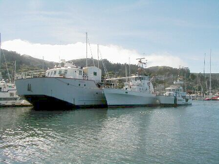
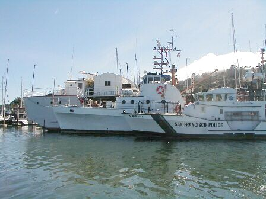
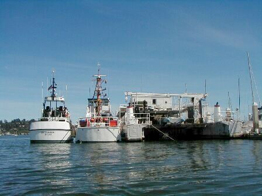

Azerbaijan Outreach
March 12, 2003
RV Transquest, Sausalito,
CA
Back to the Transquest Home Page

Transquest, S-201, and San Francisco Police

Bow view

Port side view

Stern View
Back to the Azerbaijan Outreach page

Back to the Transquest Home Page
Web pages & photos provided by the Transquest Web master: Sarah Rodger